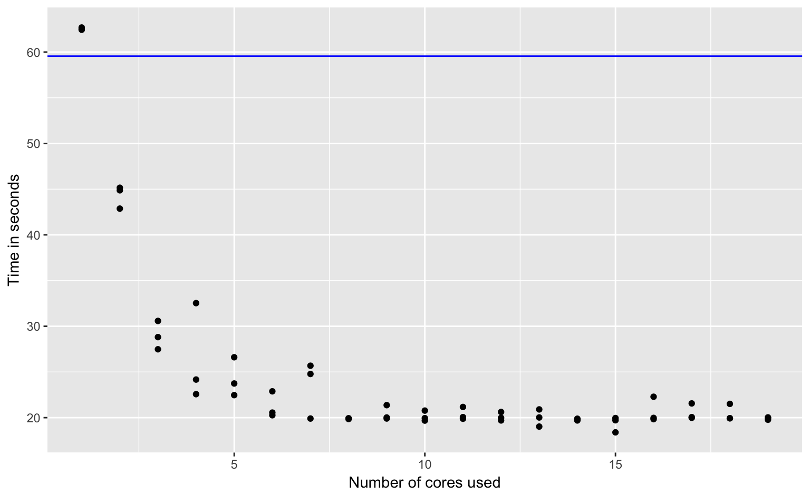

Heike Hofmann
Little or no effort is needed to separate the problem into a number of parallel tasks:
dataframe %>% group_by(group) %>%
mutate(somecalculation)we can exploit group structure to identify code pieces that can be parallelized
multidplyrtidyverse collectionmultidplyr is parallel version of dplyrdevtools::github_install("hadley/multidplyr")Resource: - https://www.r-bloggers.com/speed-up-your-code-parallel-processing-with-multidplyr/ - multidplyr vignette available on the github repo
Fits one random forest predicting color, for each value of clarity (8 levels)
library(tidyverse)
library(randomForest)
ptm0 <- proc.time()
color_models <- diamonds %>%
group_by(clarity) %>%
do(
mymodel = randomForest(color ~ carat+cut+depth+table+price+x+y+z,
data = ., ntree = 1000)
)
ptm1 <- proc.time()The difference between ptm1 and ptm0 is 59.552 on my machine.
library(multidplyr) # devtools::install_github("hadley/multidplyr")
# how many nodes?
(num_cores <- parallel::detectCores())
# copy all of the data and libraries needed to the cores
cluster <- create_cluster(num_cores-1) %>% cluster_library("randomForest")cluster_library() makes packages available on the nodes (only assume basic R implementation) cluster_assign_value() makes objects available on the nodes.
partition according to the clarity variable, collect afterwards
ptm2 <- proc.time()
color_models_faster <- diamonds %>%
partition(clarity, cluster = cluster) %>%
do(
mymodel = randomForest(color ~ carat+cut+depth+table+price+x+y+z,
data = ., ntree = 1000)
) %>%
collect()
ptm3 <- proc.time()The number of nodes determines the time between ptm3 and ptm2.
We see a significant increase in speed

We don’t actually see an X-fold increase in speed when we use X nodes
parallel::detectCores()library(nycflights13)
delays <- flights %>% group_by(flight) %>%
summarize(
mean_delay = mean(arr_delay, na.rm=FALSE)
)